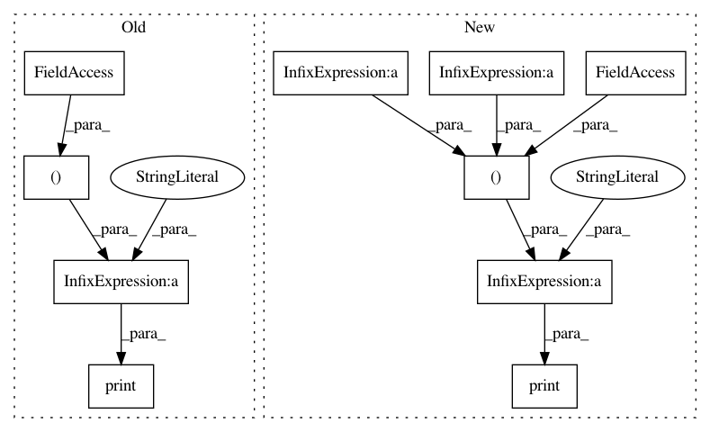

3735a6f690676bf2ab29f57ca1a02c1c63565b6c,ch16/02_breakout_es.py,,,#,179
Before Change
writer.add_scalar("batch_steps", batch_steps, step_idx)
speed = batch_steps / (time.time() - t_start)
writer.add_scalar("speed", speed, step_idx)
print("%d: reward=%.2f, speed=%.2f f/s" % (step_idx, m_reward, speed))
After Change
break
time.sleep(0.1)
dt_data = time.time() - t_start
m_reward = np.mean(batch_reward)
if m_reward > 18:
print("Solved in %d steps" % step_idx)
break
train_step(net, batch_noise, batch_reward, writer, step_idx)
writer.add_scalar("reward_mean", m_reward, step_idx)
writer.add_scalar("reward_std", np.std(batch_reward), step_idx)
writer.add_scalar("reward_max", np.max(batch_reward), step_idx)
writer.add_scalar("batch_episodes", len(batch_reward), step_idx)
writer.add_scalar("batch_steps", batch_steps, step_idx)
speed = batch_steps / (time.time() - t_start)
writer.add_scalar("speed", speed, step_idx)
dt_step = time.time() - t_start - dt_data
print("%d: reward=%.2f, speed=%.2f f/s, data_gather=%.3f, train=%.3f, steps_mean=%.2f, min=%.2f, max=%.2f, steps_std=%.2f" % (
step_idx, m_reward, speed, dt_data, dt_step, np.mean(batch_steps_data),
np.min(batch_steps_data), np.max(batch_steps_data), np.std(batch_steps_data)))
In pattern: SUPERPATTERN
Frequency: 3
Non-data size: 10
Instances
Project Name: PacktPublishing/Deep-Reinforcement-Learning-Hands-On
Commit Name: 3735a6f690676bf2ab29f57ca1a02c1c63565b6c
Time: 2018-02-20
Author: max.lapan@gmail.com
File Name: ch16/02_breakout_es.py
Class Name:
Method Name:
Project Name: astorfi/TensorFlow-World
Commit Name: 496e3d795c1f33010899f34c2e171a76a3d8e75c
Time: 2017-06-14
Author: amirsina.torfi@gmail.com
File Name: codes/2-basics_in_machine_learning/linear_svm/code/linear_SVM.py
Class Name:
Method Name:
Project Name: hunkim/PyTorchZeroToAll
Commit Name: 55b880469ced115de9949d5d25ff835dabbb2caa
Time: 2017-11-08
Author: hunkim@gmail.com
File Name: 13_2_seq2seq_att.py
Class Name:
Method Name: